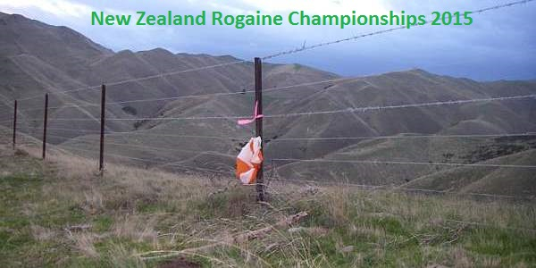
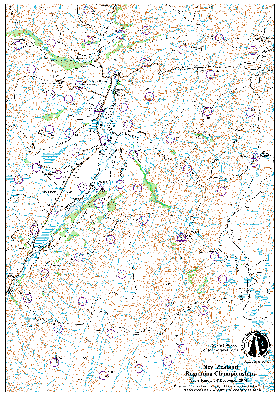

Marlborough - 31st October & 1st November 2015
Postponed
Due to a combination of land access challenges for such a large area, and work commitments for the planner the difficult decision has been taken to postpone the 2015 NZ Championships in Malborough.
This decision has not been taken lightly but we rely very much on the good will of rural communities and the time of voluntary organizers to be able to put on these events. We strongly apologise for the lateness of this notice.
We are hoping to provide an event in the same area early next year.
Marlborough is New Zealand's largest wine growing region and the home of world-renowned sauvignon blanc.
It is also the location of some stunning vistas and terrain that will challenge the most skilled navigator in the 2015 New Zealand Rogaine Championships.
But "championships" does not mean that this event is just for the elite athlete.
It is also about enjoying the country-side and the experience of being there.
It is about challenging yourself.
It is about working in a team.
So pencil the weekend of 31 Oct - 1 Nov in your calendar.

For those who are not up to the rigours of a 24 hour Championship there will shorter non-championship options.
In all events there will be the usual Men, Women and Mixed classes in the Open, Junior, Veteran and Superveteran categories.
What is a Rogaine?
A rogaine is an endurance orienteering event. It involves competitors travelling on foot in teams of at least two and at the most five people, visiting designated sites shown on a topographical map, for which they accumulate points. The skill is in choosing a route that maximises points gained for effort expended, while returning to the finish on time. Rogaines appeal to trampers, orienteers and endurance athletes.

- Are Rogaines only for serious competitors?
- NO! Rogaines are for everyone who enjoys the outdoors. All competitors start and finish at the same time. You are free to do as much or as little as you like. Many teams will include a sleep back at base in the 24 hours.

Get your team together and start a little training.
For more detail about the event see the Event Information page.